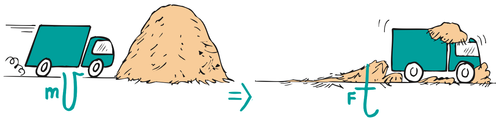
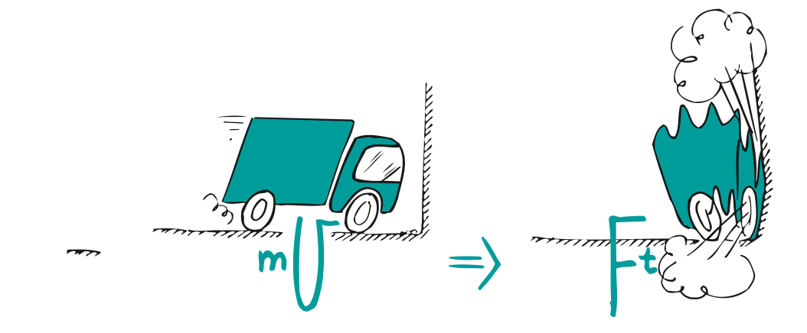

Momentum and Impulse
Mathematical idea: Products connect mass with velocity and force with time, while impulse links an interaction to momentum change.
Use source images, short reading cycles, discussion, and applications to connect the physical situation to a model you can explain.
Learning Target
Students will explain momentum as mass in motion and use impulse to describe how forces change momentum.
I can statements
- I can define momentum as a quantity that depends on mass and velocity.
- I can explain why a large mass, high speed, or both can produce large momentum.
- I can explain impulse as force acting over a time interval.
- I can connect impulse to change in momentum.
- I can explain why increasing contact time can reduce force during a collision.
Vocabulary
These are words you will see in this section. Do not define them yet.
- momentum
- impulse
- change in momentum
- contact time
- force
- velocity
Use the preview activity to decide which words you already know, recognize, or do not know yet. Watch for these words in bold when they are first introduced or defined in the reading.
Preview: Skim Before You Read
Directions
Before reading closely, skim the vocabulary list and the section. Look at titles, headings, bold words, pictures, captions, diagrams, tables, and formulas. Do not try to understand everything yet. Your job is to notice what already looks familiar and make predictions about what this section may explain.
Step 1 — Sort the vocabulary. Write each vocabulary word in the column that best matches what you know right now. You may move a word later.
| Know for sure | Recognize | Don’t know yet |
|---|---|---|
Step 2 — Skim the section. Record what catches your attention before you read closely.
| What I noticed | |
|---|---|
| What I predict | |
| What I wonder |
Content: Read, Look, Annotate, Apply
Directions
Read in short chunks. Annotate the prose and the figures together: underline evidence, circle or highlight bold vocabulary, label arrows or measured features, connect a sentence to an image, and write short questions or connections in the margins.
Reading 1: Momentum: inertia in motion
Momentum describes how difficult it can be to change the motion of a moving object. The source calls momentum “inertia in motion”: it depends on how much mass is moving and on how fast and in what direction it moves. A truck and a small car at the same speed do not have the same momentum because the truck has more mass.
The assessment relationship $p=mv$ captures both parts. Here $p$ is momentum, $m$ is mass, and $v$ is velocity. A large mass can make momentum large, a large velocity can make momentum large, and having both makes the momentum especially large.

Image read: Annotate the quantities, directions, or before-and-after evidence that the reading asks you to track.
Because velocity includes direction, momentum also has direction. In one-dimensional situations, choosing one direction as positive lets us describe opposite momentum with a negative sign. For now, the most important question is always: what mass is moving, and with what velocity?
A resting object has zero momentum because its velocity is zero. A small fast object can still have substantial momentum, just as a huge slow ship can. Momentum is not simply “how big” an object is or “how fast” it is; it combines both.
Stop and Discuss
- Use the figure to identify which object has the greater mass and which likely has the greater momentum.
- Explain why mass alone is not enough to determine momentum in every comparison.
Momentum uses mass and velocity. If either mass or velocity is zero, the product changes accordingly. Use kg·m/s for momentum in these notes.
Example 1: Momentum comparisons
A 1200 kg car moves at 10 m/s while a 600 kg cart moves at 20 m/s. Calculate each momentum and compare them.
- Show the model, relationship, or comparison that answers the question.
- Explain what the result means physically.
You Try It 1: Momentum comparisons
A 1500 kg vehicle moves at 8 m/s while a 500 kg vehicle moves at 18 m/s. Calculate and compare their momenta.
- Use the same physics idea with this new situation.
- Explain how your evidence or calculation supports the conclusion.
Reading 2: Impulse: force acting through time
A force changes motion by producing acceleration, but the amount of momentum change also depends on how long the force acts. The source names the product of force and time interval impulse. A force applied briefly produces less impulse than the same force maintained for a longer time.
The assessment relationship $J=Ft$ represents impulse. $J$ is impulse, $F$ is the force, and $t$ is the time interval during which the force acts. The figure compares equal forces acting for different times, so it isolates the role of time.

Image read: Annotate the quantities, directions, or before-and-after evidence that the reading asks you to track.
Impulse is something an object experiences during an interaction; it is not something the object “has” while moving. A moving object has momentum. During a push, hit, kick, catch, or collision, an interaction can provide impulse and change that momentum.
The source connects longer interaction time with greater change in momentum when force is held constant. That is why follow-through matters in sports: continuing the force for more time can produce a larger impulse.
Stop and Discuss
- Compare the two pushes. Circle what stays the same and mark what doubles.
- Explain why doubling the time doubles impulse when the force is unchanged.
The same impulse can come from a large force acting briefly or a smaller force acting longer.
$$J=\Delta p$$Impulse is equal to the change in momentum. It describes an interaction that changes an object’s momentum.
Example 2: Impulse from force and time
A 25 N force acts on a ball for 0.40 s. Determine the impulse and state what that impulse means physically.
- Show the model, relationship, or comparison that answers the question.
- Explain what the result means physically.
You Try It 2: Impulse from force and time
A 60 N force acts on a puck for 0.15 s. Determine the impulse and explain what quantity it changes.
- Use the same physics idea with this new situation.
- Explain how your evidence or calculation supports the conclusion.
Reading 3: Changing momentum safely
The change in momentum of an object brought to rest is fixed by its initial and final momentum. If the same change happens over different amounts of time, the force can be very different. This is the key idea behind many safety devices.
Contact time is the duration of the collision or stopping interaction. A haystack, airbag, gym mat, crumple zone, or bent knees can lengthen the stopping time. For the same momentum change, increasing this time reduces the average force.

Image read: Annotate the quantities, directions, or before-and-after evidence that the reading asks you to track.

Image read: Compare the visual evidence with the nearby reading. Mark the feature that best supports the physics claim.

Image read: Compare the visual evidence with the nearby reading. Mark the feature that best supports the physics claim.
The source contrasts a car stopping in a haystack with a car striking a rigid wall. The car can undergo a similar overall momentum change in either case, but the long stopping time in the haystack makes the force smaller. A short stopping time makes the force larger.
The boxer figure gives the same idea in a human example: moving with a punch increases the time of impact and reduces force. Moving into the punch shortens the time and increases force. The physics is not “soft things remove momentum”; the important change is how the same impulse is spread over time.
Stop and Discuss
- Compare the haystack and wall scenes. Mark which one has the longer stopping time and smaller force.
- Use the boxer image to explain why increasing impact time can reduce force without eliminating the momentum change.
Example 3: Same momentum change, different force
Two identical carts moving at the same speed are stopped. Cart A stops against a rigid bumper in 0.05 s; Cart B stops against padding in 0.25 s. Which has the larger average force? Explain using impulse.
- Show the model, relationship, or comparison that answers the question.
- Explain what the result means physically.
You Try It 3: Same momentum change, different force
Two identical balls with the same incoming speed are caught. One catch lasts 0.02 s and the other 0.10 s. Which catch produces the smaller average force? Explain.
- Use the same physics idea with this new situation.
- Explain how your evidence or calculation supports the conclusion.
Vocabulary: Define the Terms
You have now seen these words in the reading, images, and practice. Use this table to consolidate the physics meaning of each term.
| Vocabulary term | Definition |
|---|---|
| momentum | mass in motion; the product of mass and velocity |
| impulse | force acting over a time interval |
| change in momentum | the difference between final and initial momentum |
| contact time | the duration of a collision or force interaction |
| force | a push or pull that can change motion |
| velocity | speed with direction |
Summary
- Momentum depends on mass and velocity: $p=mv$.
- Impulse depends on force and interaction time: $J=Ft$.
- Impulse equals change in momentum: $J=\Delta p$.
- For the same momentum change, increasing contact time reduces average force.
Common Mistakes
| Mistake | Why it is tempting | Check instead |
|---|---|---|
| Momentum is just speed. | Fast objects seem “more moving.” | Check both mass and velocity in $p=mv$. |
| Impulse is something a moving object possesses. | The word sounds like a motion quantity. | Momentum is possessed; impulse occurs during an interaction. |
| Padding reduces the required momentum change. | The object seems to stop more gently. | For the same initial/final momentum, padding mainly increases stopping time and reduces force. |
Name the quantity that equals mass times velocity.
A moving cart is stopped with the same momentum change by two bumpers. One takes five times longer to stop it. Explain how the average stopping forces compare.
What is one thing you learned in this section? Explain it in at least one complete sentence.
What is one thing from this section you still need to understand or practice more? Be specific.